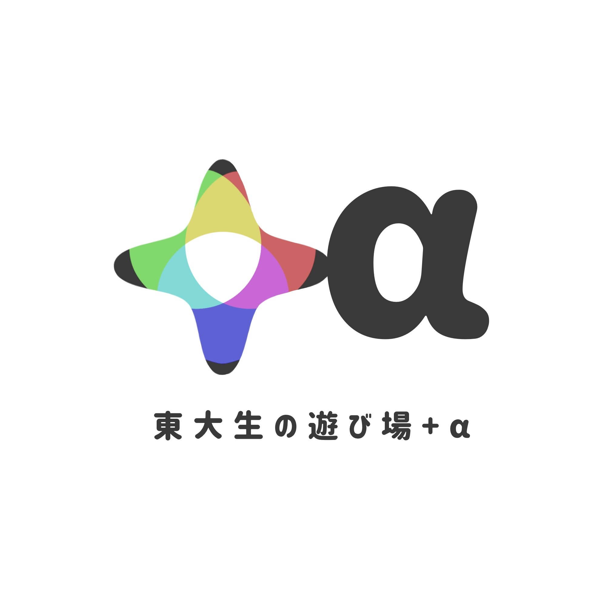

サークルの垣根を越えて、
面白いことをはじめよう。
utalpha(ウタルファ)は、いろんなサークルの代表が集まるハブコミュニティ。サークル同士がつながることで生まれる「面白いこと」を、みんなで形にしていきます。
参加サークルを見るutalpha とは
ひとつのサークルだけでは実現が難しいイベントや企画も、サークル同士が手を組めば実現できる。utalpha は、そんな「サークルの横のつながり」をつくるためのコミュニティです。
参加したい方へ
utalpha への参加に興味のあるサークル・個人の方は、お気軽にお問い合わせください。